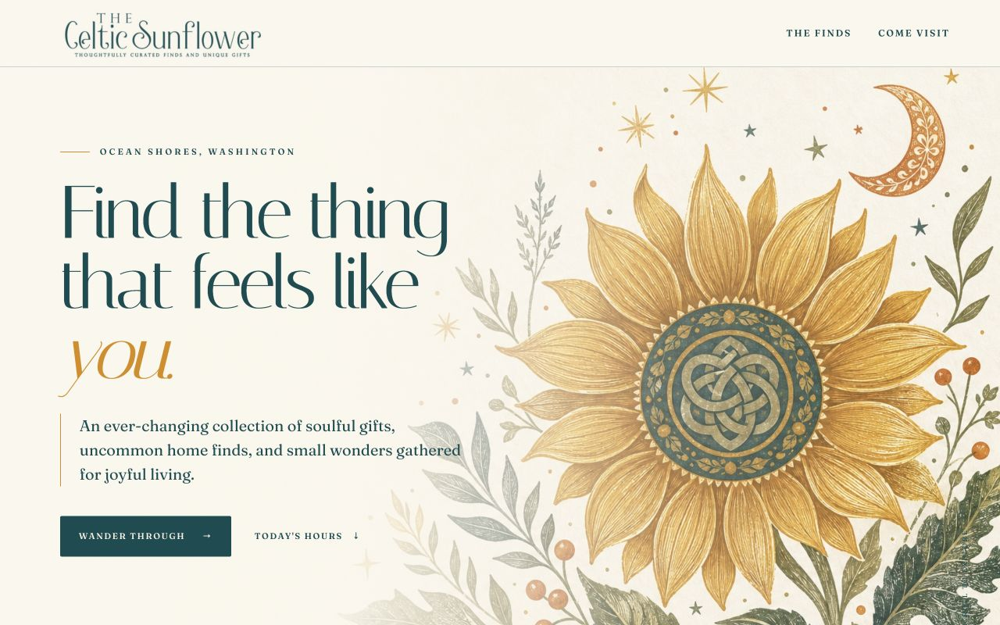
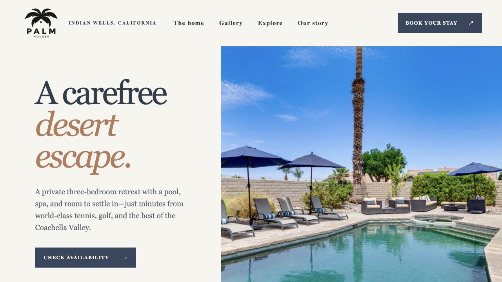

The Celtic
Sunflower
A website for an independent gift shop in Ocean Shores, with a dashboard that lets the owner update store hours and announcements.
Developer & former operations leader
My background brings together software development, work with small businesses, and years of leading customer-facing teams.
Here are two recent websites I’ve worked on, each built around the needs of the people who use it.

A website for an independent gift shop in Ocean Shores, with a dashboard that lets the owner update store hours and announcements.

A vacation rental website with a photo gallery, live availability, local recommendations, and a private editor for updating content.
More projects are on GitHub.
Explore GitHubI enjoy figuring out how things work and finding ways to make them better.
My background combines software development with years of customer-facing operations and team leadership. At the Port of Edmonds, I built reporting tools and improved workflows for the marina team. I’ve also worked directly with small businesses to build websites that fit what they need.
I hold a graduate certificate in Software Design & Development and a certificate in Full-Stack Web Development from the University of Washington, along with a B.S. in Oceanography.
Read my resumeJavaScript / TypeScript / React / Next.js / Node.js / SQL / Git / Excel & Power Query
If you have a role, project, or idea you’d like to talk about, feel free to reach out.
Say hello